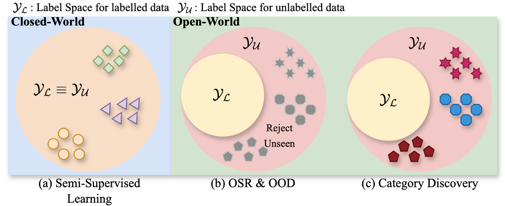
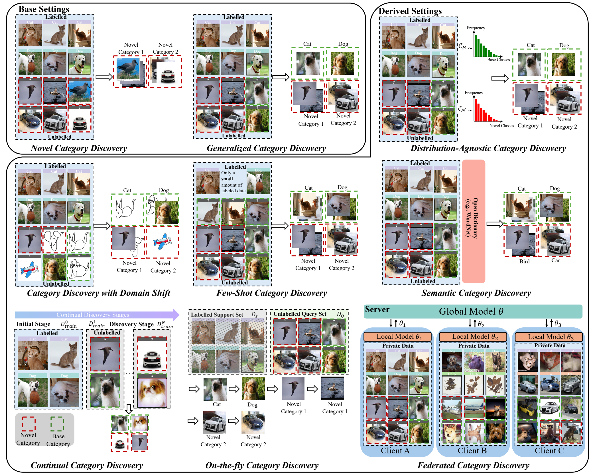

A Multi-Faceted Taxonomy
The literature is organized into two base settings, seven derived settings, and extensions across other data modalities, revealing how assumptions and real-world constraints reshape the discovery problem.
Zhenqi He,
Yuanpei Liu,
Kai Han
Visual AI Lab,
The University of Hong Kong

Category Discovery asks a model to organize unlabelled data into semantically coherent groups while using labelled examples from known categories as transferable knowledge. Unlike semi-supervised learning, it does not assume a fixed label space; unlike open-set recognition and out-of-distribution detection, it goes beyond rejecting unknowns and actively discovers their category structure. This survey offers an open-world view of the field, unifying its settings, methods, benchmarks, insights, and unresolved challenges.
A comprehensive map of category discovery, from foundational problem definitions to practical open-world scenarios and standardized benchmarking.
The literature is organized into two base settings, seven derived settings, and extensions across other data modalities, revealing how assumptions and real-world constraints reshape the discovery problem.
Methods are analyzed through three recurring components: representation learning, label assignment, and estimation of the number of categories.
NCD and GCD methods are compared across generic and fine-grained datasets, with careful attention to backbones, splits, protocols, and reproducibility.
The survey distills what currently works and identifies the major gaps that must be addressed before category discovery can operate reliably in the open world.
A single axis cannot capture the diversity of category discovery. The survey separates label-space assumptions, deployment challenges, and data modalities.
Transfer knowledge from labelled base categories to cluster an unlabelled set containing only unseen categories. NCD isolates the challenge of discovering novel semantic structure.
YL ∩ YU = ∅Cluster unlabelled data that mixes instances from seen and unseen categories. GCD better reflects real deployments but introduces bias toward labelled classes.
YL ∩ YU ≠ ∅
Overview of the category discovery taxonomy across the two base settings and seven derived settings summarized in the survey.
Across NCD, GCD, and their extensions, methods repeatedly make three coupled decisions. Progress often comes from improving one component without destabilizing the others.
Learn features that transfer knowledge from labelled categories while preserving separability among unknown categories. Modern approaches increasingly rely on self-supervised ViTs, part-level cues, hierarchy, and auxiliary semantics.
Convert learned representations into category assignments. Parametric classifiers scale well and support end-to-end training, while non-parametric clustering flexibly captures emerging category structures.
Infer how many novel categories are present. This remains one of the least solved parts of the pipeline, especially when estimation must be efficient, stable, online, or jointly optimized with representations.
The consolidated evaluations reveal several robust trends across generic and fine-grained category discovery benchmarks.
Global features often miss subtle inter-class differences. Explicitly modeling discriminative regions and object parts consistently improves fine-grained category separation.
Large-scale self-supervised backbones provide a decisive advantage. The survey reports DINOv2 outperforming DINO by more than 10% in its consolidated benchmarks.
Hierarchical supervision and hyperbolic representations improve discovery by encoding relations among categories rather than treating every category as equally unrelated.
Object-level cues, text, and vision-language knowledge provide complementary semantic grounding, although careful evaluation is needed to avoid memorization and data leakage.
| Evaluation Choice | What It Measures | When It Is Used |
|---|---|---|
| Task-Aware Accuracy | Applies Hungarian matching separately to base and novel category subsets. | Standard for NCD and sometimes reported for GCD analysis. |
| Task-Agnostic Accuracy | Matches predictions over the entire unlabelled label space in one joint assignment. | The most common and realistic protocol for GCD. |
| Continual Metrics | Track both discovery ability and forgetting across multiple timesteps. | Used for continual category discovery settings. |
The path toward real open-world learning is not a single benchmark improvement. It requires discovery systems that remain adaptive, trustworthy, and scalable as the world changes.
No parametric or non-parametric strategy is universally best. Future methods should adapt assignment mechanisms to representation quality, category granularity, and distribution shape.
Class-number estimation should move from a costly post-hoc step toward a stable training-time process that scales to large and streaming datasets.
Language can provide rich semantic priors, but benchmarks must control for pretraining overlap and distinguish genuine open-world generalization from memorization.
Most current methods assume one salient object per image. Real scenes require instance disentanglement, localization, and discovery under clutter, occlusion, and interactions.
Practical systems must simultaneously handle continual updates, domain shifts, class imbalance, heterogeneous clients, and discovery beyond image-level recognition. These challenges are often studied separately today, but they co-occur in deployment.
@article{he2025category,
title={Category Discovery: An Open-World Perspective},
author={He, Zhenqi and Liu, Yuanpei and Han, Kai},
journal={arXiv preprint arXiv:2509.22542},
year={2025},
url={https://arxiv.org/abs/2509.22542}
}